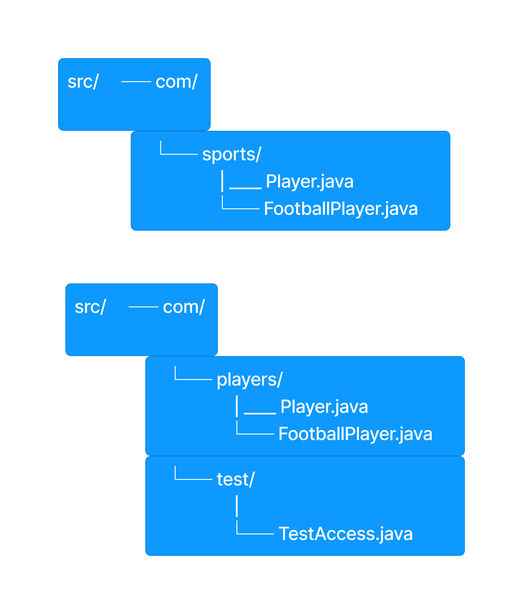
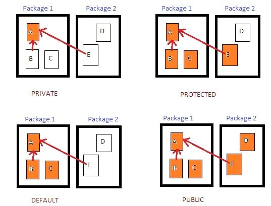

Introduction to Class
Introduction to Classes in Java
In Java, a class is a blueprint for creating objects. It defines a data structure that contains attributes (fields) and methods (functions) that operate on the data. Classes enable encapsulation, allowing data and methods to be bundled together.
Key Concepts
- Attributes: Variables that hold the state of an object.
- Methods: Functions defined in a class that define the behavior of objects.
- Object: An instance of a class that represents a specific entity.
Basic Syntax
class ClassName {
// Attributes
dataType attributeName;
// Constructor
ClassName(parameters) {
// Initialization code
}
// Methods
returnType methodName(parameters) {
// Method body
}
}
Example
class Car {
// Attributes
String color;
String model;
// Constructor
Car(String c, String m) {
color = c;
model = m;
}
// Method
void displayInfo() {
System.out.println("Car model: " + model + ", Color: " + color);
}
}
// Creating an object
Car myCar = new Car("Red", "Toyota");
myCar.displayInfo(); // Output: Car model: Toyota, Color: Red
Java Inner Classes, Static Classes, Nested Classes, and Final Classes
1. Inner Class
An inner class is a class defined within another class. It has access to the outer class's members, including private members.
class Outer {
private String outerField = "Outer field";
class Inner {
void display() {
System.out.println(outerField); // Accessing outer class's field
}
}
}
2. Static Nested Class
A static nested class is similar to an inner class but is declared static. It cannot access non-static members of the outer class directly.
class Outer {
static String staticField = "Static outer field";
static class StaticNested {
void display() {
System.out.println(staticField); // Accessing static field of outer class
}
}
}
3. Final Class
A final class cannot be subclassed or extended. It is used to restrict inheritance.
final class FinalClass {
void display() {
System.out.println("I am a final class");
}
}
// The following would cause a compile-time error:
// class SubClass extends FinalClass { }
Summary
- Inner Class: Can access all members of the outer class.
- Static Nested Class: Can only access static members of the outer class.
- Final Class: Cannot be subclassed, ensuring it remains unchanged.
When to Use Different Types of Classes in Java
1. Inner Class
Use an inner class when:
- You need to logically group classes that are only used in one place.
- The inner class needs access to the outer class's instance variables and methods, including private ones.
- You want to enhance encapsulation and maintainability of the code.
2. Static Nested Class
Use a static nested class when:
- You want to group classes that are related but do not require access to the instance variables of the outer class.
- You want to define a class that does not depend on the state of the outer class.
- You want to create helper classes that can be instantiated independently.
3. Final Class
Use a final class when:
- You want to prevent inheritance, ensuring that the class cannot be extended.
- You want to provide a complete implementation that should not be modified.
- You are implementing utility classes (like the
java.lang.Mathclass) where inheritance is unnecessary.
Examples of Class Types in Java's Built-In Libraries
1. Inner Class Example: java.awt.EventQueue
The EventQueue class has an inner class called EventDispatchThread. This inner class is used to handle event dispatching within the AWT (Abstract Window Toolkit) framework.
EventQueue queue = EventQueue.getCurrentEventQueue();
EventDispatchThread thread = queue.new EventDispatchThread();
2. Static Nested Class Example: java.util.EnumSet
The EnumSet class uses a static nested class called EnumSet.View. This nested class is used to represent a view of an EnumSet and operates independently of the outer class instance.
EnumSet weekend = EnumSet.of(Day.SATURDAY, Day.SUNDAY);
EnumSet.View view = EnumSet.View.of(weekend);
3. Final Class Example: java.lang.String
The String class is declared as final, meaning it cannot be subclassed. This is done to maintain the immutability and security of string objects.
String greeting = "Hello, World!";
Summary
- Inner Class:
java.awt.EventQueue.EventDispatchThread - Static Nested Class:
java.util.EnumSet.View - Final Class:
java.lang.String
Classes in Java facilitate modularity and code reusability, forming the foundation of object-oriented programming.
Access Specfiers (private,public and protected)
 Constructors and Destructors
- Base class constructor
- Super class constructor
- DEfault and parametrized constructor
This is the content for Slide 4. More details can be added here.
Slide 5 Content
This is the content for Slide 5. More details can be added here.